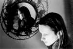
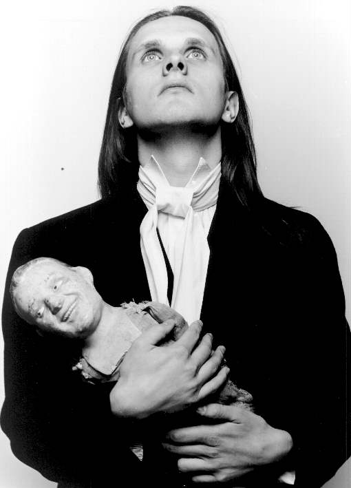
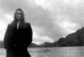
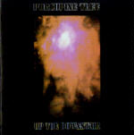
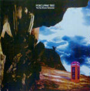
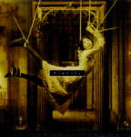
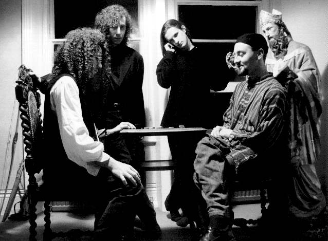

일시: 1997년 3월 22일 토요일 늦은 2시 30분
장소: 홍대앞 Freebird
주제: 영상 감상회, Porcupine Tree Special
참석자:
이강영(Lennon), 김성우(libero), 강창우(Rubisef), 박왕근(windmill),
주현주(Iris920), 조원근(Unbound), 박춘성(jonathan), 윤성욱(GNR),
최정아(Puyo), 김이영(ardor), 전승훈(LongDal), 김영호(vertigo),
김남웅(Neo-Zao), 신인철(Fish), 이동훈(meddle), 권재륜(Jazz9),
이훈구(budgie), 최창규(flyers), 조연경(mariah), 김소언(Adagio),
노봉균, 정성용.
1. Beggar's Opera - German beat club
2. Pink Floyd - eugene anold layne, astronomy domine.
3. Osanna - Amico flauto rai Tv '72
4. VDGG - a Plague of Lighthouse Keepers
5. Rogerwaters - the Final Cut Promo,
Expo live.
6. ELP - Knife Edge
7. King Crimson - Larks' tongues in aspic
8. New Trolls
9. Anglagard - Hybris Live (UCLA '93)
10. Pink Floyd - A Sourceful of Secret
by In Cheol Shin, Fish, icshin@bionner.kaist.ac.kr
Set List
1. What You Are Listening To../Synesthesia - 0:57/5:11
2. Burning Sky - 11:07
3. The Sky Moves Sideways (phase two) - 16:46
4. Sleep or No Dreaming - 5:25
5. Dark Matter - 8:59
 Brief History of Porcupine Tree
Brief History of Porcupine Tree
Steve Wilson이라는 다중악기주자가 1985년에 이미 시작한 one man project Porcupine Tree는 몇장의 cassette-only release를 바탕으로 팬들을 확보하기 시작하였다. 1992년, Delerium record사는 이들의 가능성을 파악하여 밴드와 계약하고 공식적인 더블 데뷔 앨범 'On the Sunday of Life'를 발매하였다. 이 앨범은 카셋트 앨범 시절의 곡들을 재녹음한 것으로 60년대 후반의 Pink Floyd의 사운드를 '90년대의 테크널러지로 재해석한 수준작이라는 평가를 받고 있다. 수록곡중 악명높은 'Voyage 34'라는 트랙은 LSD의 환각을 노골적으로 묘사한 스페이스락의 문제작이다.
1993년 가을, 왕성한 창작의욕을 보이는 이 신진 Neo-Psychedelic Band는 'Up the Downstair'라는 두 번째 앨범으로 멜로디메이커지로부터 '사이키델릭의 걸작'이라는 칭송을 얻어냈다. 밴드리더인 Steve Wilson외에, 베이스주자 Colin Edwin, 타악기를 맡은 Chris Maitland, 건반주자 Richard Barbieri를 보강한 Porcupine Tree는 영국과 홀랜드등지에서 왕성한 라이브 공연으로 신진 사이키델릭 밴드로서의 입지를 탄탄히 다져가게 된다. 1995년 드디어 그들의 최고걸작으로 칭송받는 'The Sky Moves Sideways'가 발매되고 이들은 C&S 레이블을 통해서 미국상륙에도 성공한다. Ozric Tentacles의 오프닝으로 성공적인 영국순회공연을 마친 Steve Wilson과 그 일당들은 홀랜드, 이탤리, 그리스등을 도는 공연으로 1995년을 마감한다.
Gong과 Marillion의 오프닝밴드로 1996년을 시작한 Porcupine Tree는 새앨범 'Signify'의 맛보기 싱글인 'Waiting'을 1996년 4월에 발매하고 뒤이어 연말에는 좀더 스트레이트한 락음악이 보강된 최신앨범 'Signify'로서 슬슬 맛이가는 기미를 보이는 Ozric Tentacles의 대를 이을 최강의 Neo-Psychedelic 밴드로서 지목받고 있다.


(거울에 비친 스티브 윌슨) (이상한걸 안고있는 윌슨)

(더 이상한 것을 안고있는 윌슨)
(조금은 정상으로 보이는 윌슨)
Set List

1. What You Are Listening To.../Synesthesia (0:57/5:11)
2. Burning Sky (11:07)
(ftom the album "Up the Downstair")

2. The Sky Moves Sideways (Phase two) (16:46)
a. Is... Not
b. Off the Map
(from the album "The Sky Moves Sideways")

3. Sleep or No Dreaming (5:24)
4. Dark Matter (8:57)
(from the album "Signify")

YeBaDong Porcupine Tree Special
Reference: The Porcupine Tree Official Homepage
(Where I stole most of these images :-))
http://www.delerium.co.uk/delerium/bandsite/porc_top.html